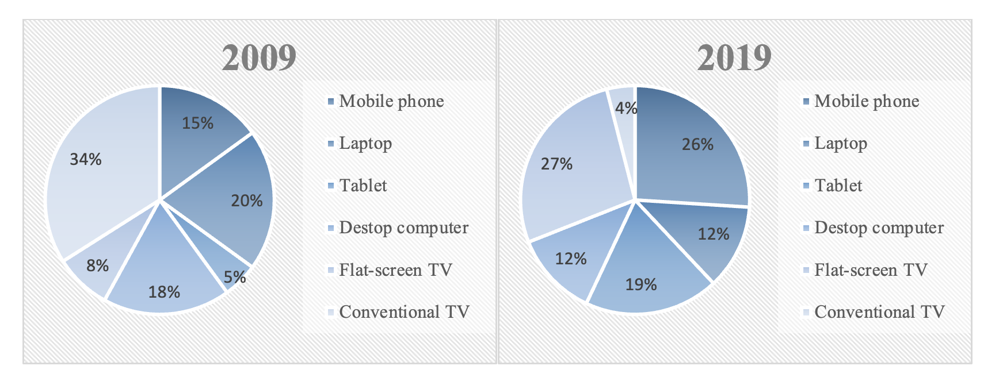

You should spend about 20 minutes on this task.
The pie charts below show the devices people in the 18 to 25 age group use to watch television in Canada in two different years.
Summarise the information by selecting and reporting the main features making comparisons where relevant.
Write at least 150 words.
